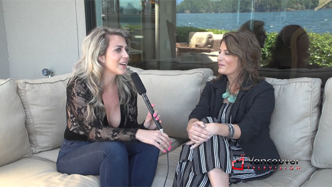

Media
KATIE CHATS: M4AM, NICOLE OLIVER & WILLIAM AINSCOUGH
Interview for Vancouver Television
My Little Pony the movie - Itw Nicole Oliver (official video)
Mornings with Martin Strong. (audio)
Nicole Oliver talks playing Lynne Spears in Lifetime’s “Britney Ever After”
Nicole Oliver. www.nexthome.yp.ca
Storytellers with Martin Strong. (audio)
Guest host Tod Maffin greets Nicole Oliver a "successful actor, producer, and director,
she is also a mother, a wife, and role model of our time."
Nicole Oliver. Vancouver Television
Meet the Cast of Littlest Pet Shop.
Moulin Madness on Novus TV
The Province's Glen Schaefer talks to the celebrants at Cin Cin Restaurant for the Brightlight Pictures VIFF kickoff party.
Kids market at Granville Island with Nicole Oliver.
Breakfast TV with NICOLE OLIVER and WILLIAM AINSCOUGH
Crash Test Mommy